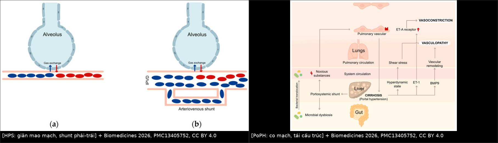
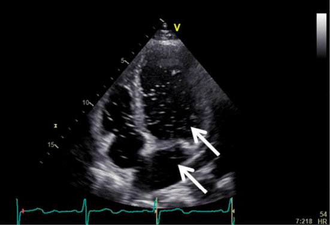
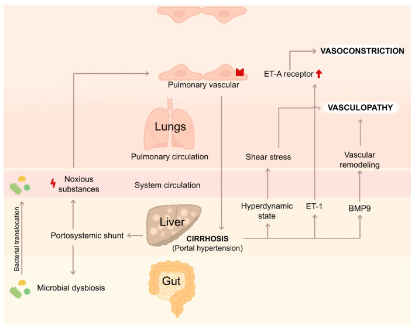

186 — Hội chứng gan–phổi (HPS) & tăng áp phổi do tăng áp cửa (PoPH): hai mặt đối lập của cùng một tăng áp cửa / Hepatopulmonary syndrome & portopulmonary hypertension
Tags: pattern:gian-mach-trong-phoi pattern:shunt-phai-trai pattern:gia-tang-ap-phoi vung:gan vung:phoi score:HPS score:ILTS protocol:SA-tim-tuong-phan protocol:thong-tim-phai
Mức chắc chắn (certainty): tổng hợp y văn (literature synthesis) — số liệu lấy nguyên từ 2 bài tổng quan mở (Biomedicines 2026, PMC13405752, CC BY 4.0; J Clin Med 2025, PMC12786689, CC BY 4.0), 1 ca HPS có ảnh siêu âm tim cản quang (Intern Med 2025, PMC12393917) và 1 ca PoPH điều trị sotatercept dẫn tới ghép gan (Commun Med 2026, PMC13039743).
Câu hỏi gốc của bài: bệnh nhân xơ gan/tăng áp cửa than khó thở, giảm oxy máu — đó là HPS (giãn mạch trong phổi → shunt phải–trái) hay PoPH (co mạch/tái cấu trúc tiểu động mạch phổi → tăng áp phổi)? Hai bệnh cùng nền, ngược cơ chế, và câu trả lời đảo ngược chỉ định ghép gan và TIPS: một bên không có thuốc đặc hiệu, ghép gan là cách chữa duy nhất; bên kia có thuốc giãn mạch phổi, nhưng áp lực phổi cao lại là chống chỉ định ghép. Điểm tựa: HPS = giãn mạch + shunt (khí không tới được máu); PoPH = co mạch + tái cấu trúc (máu không qua được phổi). Vì vậy hình ảnh/phép đo cũng khác nhau: HPS chẩn đoán bằng bong bóng (microbubble) trong tim trái và scan MAA, PoPH chẩn đoán bằng siêu âm tim ước tính áp lực + thông tim phải.
1. Tổng quan bệnh học – cơ chế hình ảnh
A. HPS — giãn mạch trong phổi (intrapulmonary vascular dilatation, IPVD):
- Cơ chế: xơ gan → loạn khuẩn ruột + chuyển vị vi khuẩn → cytokin viêm và NO (eNOS/iNOS), CO (HO-1) tăng; ET-1 tác động thụ thể ET-B trên nội mô cũng làm tăng NO → giãn mao mạch trước và trong phổi, kèm tăng sinh mạch (angiogenesis) (PMC13405752).
- Hậu quả sinh lý — 3 tầng, theo thứ tự nặng dần:
- Bất tương xứng thông khí–tưới máu (V/Q mismatch): tưới máu tăng, thông khí không tăng.
- Rối loạn khuếch tán: khoảng cách khí–hồng cầu tăng vì mao mạch giãn; cộng với thời gian tiếp xúc mao mạch ngắn trong trạng thái tuần hoàn tăng động → gradient A–a tăng.
- Shunt phải–trái thật qua dị dạng động–tĩnh mạch phổi → giảm oxy đáp ứng kém với oxy liệu pháp.
- Vì sao hình ảnh trông như vậy (vật lý của "bong bóng"): mao mạch phổi bình thường 8–15 µm, hồng cầu ~7 µm; vi bọt khí > 10 µm bị giữ lại ở mao mạch. Trong HPS mao mạch có thể giãn tới 500 µm → bọt khí đi qua vào tim trái. Vì vậy thấy bọt ở tim trái sau ≥ 3 chu chuyển tim = shunt TRONG PHỔI; xuất hiện < 3 chu chuyển = shunt TRONG TIM (PFO/ASD) (PMC13405752).
- Ngưỡng định lượng nằm lòng:
- Tiêu chuẩn chẩn đoán (đủ cả 4): (1) bệnh gan mạn/tăng áp cửa; (2) **PaO₂ < 80 mmHg** và **gradient A–a ≥ 15 mmHg** (≥ 20 mmHg nếu > 64 tuổi) ở tư thế ngồi/đứng; (3) bằng chứng IPVD (siêu âm tim cản quang hoặc scan MAA); (4) loại trừ nguyên nhân giảm oxy khác (PMC12786689).
- Phân độ theo PaO₂ (khi thở khí trời): nhẹ > 80 mmHg; trung bình 60–79; nặng 50–59; rất nặng < 50 mmHg (PMC12786689; PMC13405752 gộp "trung bình 60–<80" và "nặng < 60" cho phần chỉ định ghép).
- Scan MAA (⁹⁹ᵐTc-macroaggregated albumin): hạt bị giữ ở mao mạch phổi; nếu lượng hạt lên não > 6% → shunt nội phổi dương tính (PMC13405752). Hạn chế: định lượng được nhưng không phân biệt trong tim hay trong phổi.
- Dịch tễ: IPVD có ở 13–56% bệnh gan mạn tiến triển; HPS 10–30% ở xơ gan/tăng áp cửa tiến triển, chiếm 5–10% ca ghép gan (nhóm được MELD exception) (PMC13405752, PMC12786689).
- Dấu hiệu lâm sàng đặc hiệu nhưng HIẾM: khó thở tăng khi ngồi dậy (platypnea) và giảm oxy khi đứng (orthodeoxia, PaO₂ giảm ≥ 5% hoặc ≥ 4 mmHg) chỉ gặp ~18–20% ca.
- CT ngực KHÔNG phân biệt được HPS với bệnh gan khác (PMC4934684) — đừng "chẩn đoán HPS trên CT".
B. PoPH — co mạch và tái cấu trúc tiểu động mạch phổi:
- Cơ chế: tuần hoàn tăng động + tăng cung lượng phổi → lực cắt (shear stress) trên nội mô; ET-1 qua thụ thể ET-A gây co mạch; BMP9 và các yếu tố tăng sinh → tái cấu trúc thành mạch, tăng sức cản (PMC13405752).
- Định nghĩa huyết động (bắt buộc thông tim phải): mPAP > 20 mmHg, PVR ≥ 2 Wood units, PAWP ≤ 15 mmHg (loại tăng áp phổi sau mao mạch) (PMC12786689).
- Phân độ: nhẹ mPAP 20–35 mmHg & PVR < 3 WU**; **trung bình 35–50 & PVR 3–5 WU**; **nặng > 50 mmHg & PVR > 5 WU (PMC12786689).
- Dịch tễ: 2–6% bệnh nhân tăng áp cửa/ứng viên ghép gan; chiếm 5–15% ca tăng áp phổi nhóm 1 (PMC13405752).
- Vì sao siêu âm tim có thể SAI: trong xơ gan, cung lượng cao và tuần hoàn tăng động làm vận tốc hở ba lá (TRV) tăng giả tạo → RVSP ước tính cao hơn thật. Trong nghiên cứu của Krowka, ~1/3 ứng viên ghép gan có RVSP > 50 mmHg nhưng PVR bình thường khi thông tim (PMC13405752).
C. Hai bệnh có thể CÙNG TỒN TẠI: ca sotatercept (PMC13039743) có shunt phải–trái trên siêu âm tim cản quang nhưng SpO₂ bình thường, trong khi vẫn có PoPH nặng (mPAP 65 mmHg) — tức shunt nội phổi không triệu chứng nằm dưới bệnh cảnh tăng áp phổi.
2. Mẫu hình + chẩn đoán phân biệt theo vị trí (Gamut)
A. "Khó thở/giảm oxy ở bệnh nhân xơ gan" — gamut chính:
- HPS: giảm oxy kín đáo, tăng khi gắng sức, không đáp ứng tốt với oxy khi đã có shunt lớn; bọt khí ở tim trái sau ≥ 3 chu chuyển; MAA não > 6%.
- PoPH: khó thở gắng sức, ngất, đau ngực, phù, P2 mạnh, suy tim phải; RVSP cao trên siêu âm; xác định bằng thông tim.
- Tràn dịch màng phổi do gan (hepatic hydrothorax): thường bên phải, lượng lớn, tái phát; giảm oxy do hạn chế thông khí, không có shunt.
- Cổ trướng lượng lớn: hạn chế cơ hoành → khó thở; không có giảm oxy khi đứng.
- Thuyên tắc phổi (bài 070): khởi phát đột ngột, D-dimer/CTA dương; nhưng bệnh nhân xơ gan có tăng đông nên không được bỏ qua.
- Shunt trong tim (PFO/ASD): bọt xuất hiện < 3 chu chuyển; có thể kèm hội chứng platypnea–orthodeoxia không do gan.
- Dị dạng cửa–chủ bẩm sinh (Abernethy): không có xơ gan vẫn có HPS; CT thấy tĩnh mạch cửa đổ trực tiếp vào tĩnh mạch chủ/gan; trẻ em + giảm oxy là dấu gợi ý.
- Thiếu máu nặng, COPD/giãn phế quản, bệnh mô kẽ: loại trừ bằng huyết học, PFT, HRCT.
B. Mẫu hình hình ảnh/phép đo:
- Siêu âm tim cản quang (bubble study): dương tính muộn = trong phổi; dương tính sớm = trong tim.
- Siêu âm tim Doppler: RVSP/TRV cao, giãn thất phải, vách liên thất đẩy sang trái → gợi ý PoPH, không chẩn đoán được.
- CT ngực: giãn động mạch phổi, giãn buồng tim phải ở PoPH; không có cục máu đông (khác thuyên tắc); không phân biệt được HPS.
- Thông tim phải: chuẩn vàng cho PoPH (mPAP, PVR, PAWP, cung lượng tim).
C. Ba câu hỏi lọc trước khi kết luận:
- Giảm oxy có shunt nội phổi không? (bubble muộn/MAA) → HPS.
- Áp lực phổi có tăng thật không? (thông tim, không chỉ siêu âm) → PoPH.
- Có chống chỉ định ghép/TIPS vì phổi không? (PaO₂ < 60; mPAP ≥ 45) → đổi chiến lược.
3. Bảng so sánh phân biệt (ma trận đối chiếu)
| Thực thể (entity) | Hình ảnh / phép đo điển hình | Chốt vào (rule-in) | Chốt loại (rule-out) | Gợi ý xác nhận |
|---|---|---|---|---|
| HPS | Bọt khí ở tim trái sau ≥ 3 chu chuyển; MAA não > 6%; CT ngực không đặc hiệu | Bệnh gan + PaO₂ < 80 + A–a ≥ 15 (≥ 20 nếu > 64 tuổi) + IPVD | Bọt xuất hiện < 3 chu chuyển → shunt trong tim, không phải HPS | ABG tư thế ngồi; siêu âm tim cản quang; MAA |
| PoPH | RVSP/TRV cao, giãn thất phải; CT giãn ĐM phổi; không có huyết khối | mPAP > 20 + PVR ≥ 2 WU + PAWP ≤ 15 trên thông tim | PVR bình thường dù RVSP > 50 → tăng áp giả do cung lượng cao | Thông tim phải bắt buộc; BNP; ECG |
| Tràn dịch màng phổi do gan | Dịch bên phải, không kèm giảm đậm độ nhu mô; không có bọt ở tim trái | Dịch transudate + bệnh gan + không có shunt | Bọt muộn dương tính → có HPS kèm theo | Siêu âm/CT; chọc dò (SAAG) |
| Thuyên tắc phổi | Cục máu đông trong ĐM phổi trên CTA; giãn thất phải cấp | CTA dương + khởi phát đột ngột | Không có cục máu đông → không phải | CTA ngực; D-dimer; xem bài 070 |
| Shunt trong tim (PFO/ASD) | Bọt ở tim trái < 3 chu chuyển; có thể thấy dòng chảy qua vách trên siêu âm tim | Bọt sớm + thăm dò vách liên nhĩ | Bọt muộn ≥ 3 chu chuyển → trong phổi | Siêu âm tim thực quản/3D; test đóng bằng bóng |
| Abernethy (shunt cửa–chủ bẩm sinh) | Tĩnh mạch cửa đổ trực tiếp vào TM chủ/gan, gan teo, nốt tăng sản; HPS không cần xơ gan | Shunt lớn + HPS ở trẻ/người trẻ, gan không xơ | Không thấy shunt cửa–chủ → HPS do xơ gan | CT 3 thì; siêu âm Doppler; xem bài 166/157 |
| COPD / bệnh mô kẽ | Giãn phổi, khí thũng, xơ kẽ trên HRCT | Rối loạn thông khí trên PFT + HRCT bệnh lý | PFT/HRCT bình thường → tìm nguyên nhân mạch máu | PFT, HRCT, DLCO |
| HPS + PoPH đồng thời | Vừa bọt muộn dương tính vừa mPAP > 20/PVR ≥ 2; có thể SpO₂ bình thường | Hai bộ tiêu chuẩn cùng thoả | Chỉ thoả một bộ → một bệnh | Làm đủ cả bubble study và thông tim |

Trái (HPS): mao mạch phổi giãn, hồng cầu đi qua vùng khí–máu với khoảng khuếch tán tăng; khi giãn nặng hình thành shunt động–tĩnh mạch — máu tĩnh mạch trộn vào máu động mạch. Phải (PoPH): từ xơ gan/tăng áp cửa, chuyển vị vi khuẩn + tuần hoàn tăng động + ET-1 + BMP9 dẫn tới co mạch (thụ thể ET-A tăng) và tái cấu trúc mạch → tăng sức cản phổi. Nguồn: Biomedicines 2026, PMC13405752, Fig. 2 và Fig. 3, CC BY 4.0; ảnh ghép letterbox.Đọc chuẩn xác: "giảm oxy do shunt" khác "tăng áp phổi"
- Shunt lớn → oxy liệu pháp kém hiệu quả: oxy thêm vào phế nang không tiếp xúc được máu mao mạch đã đi tắt → PaO₂ tăng ít. Đây là dấu gợi ý HPS nặng.
- PoPH → giảm oxy do cung lượng thấp/gắng sức, không nhất thiết có shunt; thở oxy ít cải thiện vì lý do khác (giảm cung lượng, tăng áp).
- Đo được — nên ghi vào báo cáo: PaO₂ + A–a gradient (tư thế ngồi), thời điểm bọt xuất hiện (số chu chuyển), % hạt MAA lên não, RVSP/TRV trên siêu âm, và nếu có thông tim: mPAP, PVR, PAWP, cung lượng tim.
4. Protocol chụp/đo + tiêu chuẩn ghép gan
Protocol sàng lọc – chẩn đoán:
- Bước 1 — lâm sàng: bệnh nhân xơ gan khó thở/gắng sức giảm dần, SpO₂ thấp, ngón tay dùi trống, cyanosis, sao mạch; đo SpO₂ khí trời và khi đứng 3–5 phút (tìm orthodeoxia).
- Bước 2 — khí máu động mạch (ABG) tư thế ngồi: tính gradient A–a; ngưỡng ≥ 15 mmHg (≥ 20 nếu > 64 tuổi); PaO₂ < 80 mmHg là bất thường.
- Bước 3 — siêu âm tim cản quang (agitated saline): bơm vi bọt > 10 µm vào tĩnh mạch ngoại vi; ghi số chu chuyển đến khi bọt vào tim trái: ≥ 3 = trong phổi, < 3 = trong tim.
- Bước 4 — scan MAA khi siêu âm không kết luận hoặc cần định lượng shunt (não > 6% = dương).
- Bước 5 — siêu âm tim Doppler cho mọi bệnh nhân: TRV/RVSP, kích thước thất phải, chức năng thất phải; RVSP > 50 mmHg hoặc có dấu suy tim phải → thông tim phải.
- Bước 6 — thông tim phải (chuẩn vàng PoPH): mPAP, PVR, PAWP, cung lượng tim; loại tăng áp sau mao mạch (PAWP > 15) và tăng cung lượng đơn thuần.
- Theo dõi: ABG mỗi 6 tháng ở HPS nặng để xếp hạng ghép; siêu âm tim định kỳ ở PoPH đang điều trị.
Tiêu chuẩn định lượng quyết định điều trị/ghép (theo nguồn đã đọc):
| Tình huống | Ngưỡng | Hệ quả |
|---|---|---|
| HPS trung bình | PaO₂ 60–79 mmHg | Theo dõi sát, cân nhắc xếp ghép |
| HPS nặng | PaO₂ < 60 mmHg | Ưu tiên ghép gan sớm, có thể được MELD exception |
| HPS rất nặng | PaO₂ < 50 mmHg | Tăng tử vong sau ghép → theo dõi ABG mỗi 6 tháng, xếp ưu tiên |
| PoPH nhẹ | mPAP 20–35, PVR < 3 WU | Điều trị/ theo dõi; đánh giá ghép |
| PoPH trung bình – nặng | mPAP 35–50, PVR 3–5 WU | Điều trị thuốc giãn mạch phổi; ghép chỉ khi huyết động đạt đích |
| Đích huyết động trước ghép (ILTS) | mPAP < 35 + PVR < 5 WU, hoặc mPAP ≥ 35 + PVR < 3 WU | Nhóm thứ hai nguy cơ chu phẫu cao hơn |
| Chống chỉ định ghép tuyệt đối | mPAP ≥ 45 mmHg | Không ghép (ILTS) |
| RVSP trên siêu âm | > 50 mmHg | Phải thông tim — ~1/3 có PVR bình thường |
Điều trị (khung):
- HPS: không có thuốc đặc hiệu chứng minh kéo dài hiệu quả; oxy liệu pháp hỗ trợ; TIPS không được khuyến cáo (có thể làm nặng tuần hoàn tăng động); ghép gan là cách chữa duy nhất — giải quyết phần lớn bất thường trao đổi khí (PMC13405752).
- PoPH: dùng thuốc tăng áp phổi đặc hiệu (PDE5i, đối kháng thụ thể endothelin, prostacyclin) theo nguyên tắc của PAH nhóm 1, đặc biệt khi mPAP ≥ 35 mmHg; cohort 637 ca (2020) đa số Child–Pugh A, MELD trung vị 11, chủ yếu đơn trị PDE5i hoặc ERA, cải thiện chức năng và 6MWD sau trung vị 4,5 tháng (PMC13405752).
- Sotatercept (ức chế activin) — dữ liệu mới ở mức ca: bệnh nhân 44 tuổi, mPAP 65 mmHg, PVR 10,4 WU; sau trị liệu phối hợp còn 52/3,7, sau 9 tháng sotatercept 0,3 mg/kg còn mPAP 35 mmHg, PVR 2,08 WU → được ghép gan (mPAP 35, PVR 1,5 trong mổ). Cảnh báo: xuất hiện shunt phải–trái trên siêu âm tim và giảm oxy có thể liên quan sotatercept (PMC13039743) — thuốc giãn mạch phổi có thể làm lộ/ làm nặng shunt của HPS.
flowchart TD
A[Bệnh nhân xơ gan khó thở<br/>hoặc SpO2 thấp] --> B[ABG tư thế ngồi:<br/>PaO2 và gradient A-a]
B --> C{PaO2 dưới 80<br/>hoặc A-a từ 15 mmHg?}
C -->|Không| D[Tìm nguyên nhân khác:<br/>cổ trướng, tràn dịch, COPD, thiếu máu]
C -->|Có| E[Siêu âm tim cản quang<br/>đếm số chu chuyển có bọt ở tim trái]
E --> F{Bọt sau 3 chu chuyển?}
F -->|Có| G[HPS: định lượng shunt<br/>bằng scan MAA nếu cần]
F -->|Không, bọt sớm| H[Shunt trong tim:<br/>siêu âm tim thực quản, cân nhắc đóng lỗ]
E --> I[Siêu âm tim Doppler:<br/>TRV, RVSP, thất phải]
I --> J{RVSP trên 50 mmHg<br/>hoặc suy tim phải?}
J -->|Có| K[Thông tim phải:<br/>mPAP, PVR, PAWP]
J -->|Không| L[Theo dõi định kỳ]
K --> M{PVR từ 2 WU<br/>và PAWP dưới 15?}
M -->|Có| N[PoPH: thuốc tăng áp phổi<br/>đánh giá lại huyết động]
M -->|Không| O[Tăng áp giả do cung lượng cao<br/>hoặc tăng áp sau mao mạch]
G --> P{PaO2 dưới 60 mmHg?}
P -->|Có| Q[Xếp ghép gan ưu tiên<br/>ABG mỗi 6 tháng]
P -->|Không| L
N --> R{mPAP dưới 45 mmHg<br/>và đạt đích ILTS?}
R -->|Có| Q
R -->|Không| S[Tiếp tục điều trị,<br/>chưa ghép]
5. Biến thể bình thường và cạm bẫy
- Siêu âm tim ước tính CAO hơn thật ở xơ gan: tuần hoàn tăng động làm TRV tăng; ~1/3 ca RVSP > 50 mmHg có PVR bình thường → không đặt máy tạo nhịp chẩn đoán PoPH chỉ bằng siêu âm, phải thông tim.
- SpO₂ bình thường KHÔNG loại trừ HPS: bệnh nhân có thể giảm oxy chỉ khi gắng sức/đứng; ca sotatercept có shunt phải–trái nhưng SpO₂ bình thường cả khi gắng sức.
- Bọt muộn có thể do kỹ thuật: bơm ít, bơm chậm, tư thế bệnh nhân, shunt nhỏ → âm tính giả; nếu nghi cao, lặp lại hoặc làm MAA.
- Bọt sớm (< 3 chu chuyển) là shunt TRONG TIM: đừng gọi là HPS; tìm PFO/ASD, đặc biệt khi có hội chứng platypnea–orthodeoxia.
- CT ngực bình thường không loại trừ HPS: CT không phân biệt HPS với bệnh gan khác (PMC4934684); đừng báo "không có bệnh phổi" rồi bỏ qua khí máu.
- Oxy liệu pháp "không hiệu quả" không phải thất bại điều trị: trong shunt lớn, oxy không sửa được shunt — mục tiêu là ghép gan, không phải tăng FiO₂ vô hạn.
- TIPS ở HPS: có thể làm nặng tuần hoàn tăng động và giãn mạch phổi; không dùng TIPS để điều trị HPS (PMC13405752). Ngược lại, đánh giá PoPH là bắt buộc trước TIPS vì tăng áp phổi nặng làm tăng nguy cơ suy tim sau mở shunt.
- PoPH có thể xuất hiện MUỘN sau ghép gan: không loại trừ vì "đã ghép"; theo dõi siêu âm tim khi có triệu chứng.
- Hai bệnh cùng lúc: dùng thuốc giãn mạch phổi ở bệnh nhân có shunt nội phổi có thể làm tăng shunt và giảm oxy (ca sotatercept); cần theo dõi SpO₂/ABG sau mỗi lần lên liều.
- Abernethy: HPS không cần xơ gan. Trẻ/người trẻ giảm oxy + gan không xơ + tĩnh mạch cửa giãn bất thường → tìm shunt cửa–chủ bẩm sinh.
6. Tự lượng giá — Blind Quiz
Ca 1 — Nam 32 tuổi, xơ gan do thiếu hormone (sau mổ u sọ hầu), SpO₂ 84% khí trời nhưng "không thấy khó thở". Khí máu: PaO₂ 50,4 mmHg, gradient A–a 58,8 mmHg. Siêu âm tim cản quang với nước muối lắc:

- Câu hỏi: (1) Vi bọt ở đâu và xuất hiện sau bao nhiêu chu chuyển tim? (2) Phân độ HPS theo PaO₂? (3) Vì sao bệnh nhân không khó thở dù PaO₂ rất thấp, và điều này ảnh hưởng gì tới sàng lọc?
Bấm để hiện đáp án (findings + chẩn đoán)
- Dấu hiệu: vi bọt xuất hiện ở buồng tim trái sau 5 chu chuyển tim (mũi tên) → shunt TRONG PHỔI, không phải shunt trong tim.
- Chẩn đoán/phân độ: đủ 4 tiêu chuẩn HPS (bệnh gan + PaO₂ < 80 + A–a ≥ 15 + IPVD) và PaO₂ 50,4 mmHg → HPS NẶNG (50–59 mmHg).
- Vì sao không khó thở: giảm oxy phát triển từ từ, bệnh nhân thích nghi — đây là lý do phải sàng lọc bằng SpO₂/ABG chứ không chờ triệu chứng; ca gốc được oxy tại nhà + điều trị hormone, đang chờ ghép gan.
- Nguồn ảnh: Tadokoro T, Tani J, Sato Y, et al. Intern Med 2025;64(15):2307–2311, PMC12393917, Fig. 2, CC BY-NC-ND 4.0 (nguyên bản, không chỉnh sửa).
Ca 2 — Nam 44 tuổi, xơ gan cryptogenic, khó thở khi gắng sức 1 năm. Siêu âm tim: TRV 4,4 m/s. Thông tim phải: mPAP 65 mmHg, PAWP 8 mmHg, cung lượng tim 5,5 L/phút. Cơ chế bệnh sinh của tình trạng này:

- Câu hỏi: (1) Tính PVR và phân độ PoPH? (2) Vì sao TRV cao chưa đủ để chẩn đoán? (3) Đích huyết động nào cần đạt trước khi ghép gan?
Bấm để hiện đáp án
- PVR: (mPAP − PAWP)/cung lượng tim = (65 − 8)/5,5 ≈ 10,4 Wood units → PoPH NẶNG (mPAP > 50, PVR > 5).
- Vì sao cần thông tim: xơ gan gây tuần hoàn tăng động, TRV/RVSP có thể cao giả tạo; chỉ thông tim mới tách được tăng áp trước mao mạch thật (PAWP ≤ 15, PVR ≥ 2) khỏi tăng cung lượng.
- Đích trước ghép (ILTS): mPAP < 35 + PVR < 5 WU, hoặc mPAP ≥ 35 + PVR < 3 WU (nguy cơ cao hơn); mPAP ≥ 45 là chống chỉ định tuyệt đối. Ca gốc: trị liệu phối hợp → sotatercept đưa mPAP 65 → 35, PVR 10,4 → 2,08, sau đó được ghép gan (trong mổ mPAP 35, PVR 1,5).
- Cơ chế (theo sơ đồ): xơ gan → tuần hoàn tăng động (shear stress), ET-1 qua ET-A, BMP9 → co mạch + tái cấu trúc thành tiểu động mạch phổi.
- Nguồn ảnh: Vivatvakin S, Werawatganon D. Biomedicines 2026;14(7):1499, PMC13405752, Fig. 3, CC BY 4.0. Số liệu ca: Jose A, Zacharias W, Fernandes S, et al. Commun Med 2026;6:179, PMC13039743.
Ca 3 — Bệnh nhân xơ gan, khó thở tăng khi ngồi dậy; PaO₂ ngồi 68 mmHg, nằm 74 mmHg. Bong bóng trong tim trái xuất hiện sau 2 chu chuyển. Chẩn đoán nào đúng?
- Câu hỏi: (1) Bọt sau 2 chu chuyển gợi ý gì? (2) Có phải HPS không? (3) Cần làm gì tiếp?
Bấm để hiện đáp án
- Bọt sau 2 chu chuyển = shunt TRONG TIM (ngưỡng phân biệt là 3 chu chuyển): nghĩ PFO/ASD — có thể gây hội chứng platypnea–orthodeoxia (PaO₂ giảm khi đứng: 74 → 68 mmHg, giảm 6 mmHg ≥ ngưỡng 4 mmHg).
- Không kết luận HPS chỉ vì có bọt; HPS cần bọt MUỘN ≥ 3 chu chuyển hoặc MAA não > 6%.
- Tiếp theo: siêu âm tim thực quản/3D tìm lỗ thông, đo bóng (balloon occlusion test) nếu cân nhắc đóng; vẫn phải làm ABG + MAA vì HPS và shunt trong tim có thể cùng tồn tại ở bệnh nhân xơ gan.
Phản biện (critique): phần lớn ngưỡng trong bài đến từ hai bài tổng quan (PMC13405752, PMC12786689) tổng hợp y văn, không phải thử nghiệm ngẫu nhiên; ngưỡng ghép mPAP < 35/PVR < 5 là đồng thuận ILTS, không phải kết quả RCT. Dữ liệu sotatercept ở PoPH chỉ là một ca (PMC13039743) — không dùng để phổ quát chỉ định. Ca HPS (PMC12393917) là ca thứ phát sau suy tuyến yên, không đại diện cho HPS do rượu/virus.
Bài liên quan chéo
- 100 – Tổng quan hệ Bụng
- 127 – Gan tim (cardiac hepatopathy) & tăng áp cửa do tắc nghẽn dòng ra
- 149 – Tăng áp cửa không do xơ gan (PSVD, sán máng, huyết khối cửa mạn)
- 166 – Tăng áp cửa trong xơ hóa gan bẩm sinh (CHF) & bệnh Caroli
- 176 – TIPS/DIPS: chỉ định, kỹ thuật & theo dõi shunt
- 182 – Biến chứng sớm sau TIPS
- 183 – Giảm đường kính shunt & HE kháng trị sau TIPS
- 070 – Thuyên tắc phổi và huyết khối tĩnh mạch sâu cấp
- 040 – Tràn dịch màng phổi (tràn dịch do gan)
Không dùng để chẩn đoán độc lập khi chưa có người hướng dẫn.